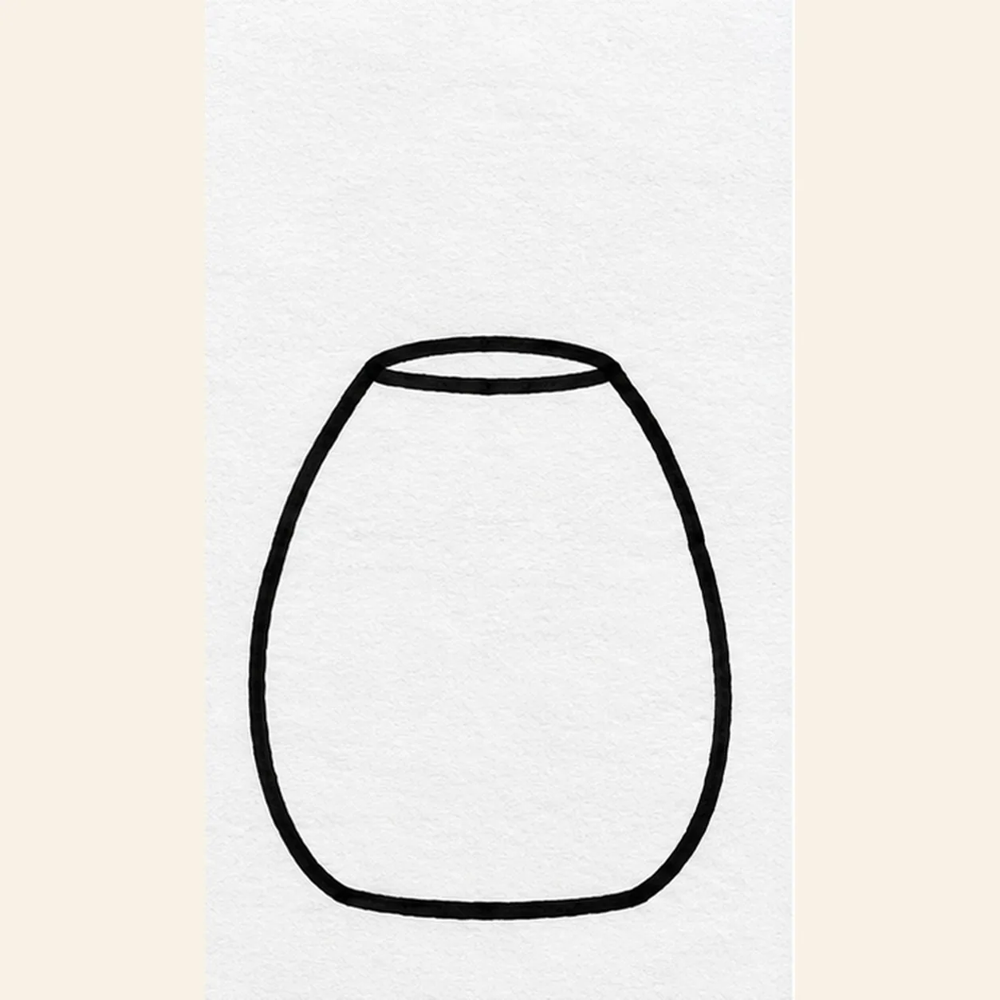
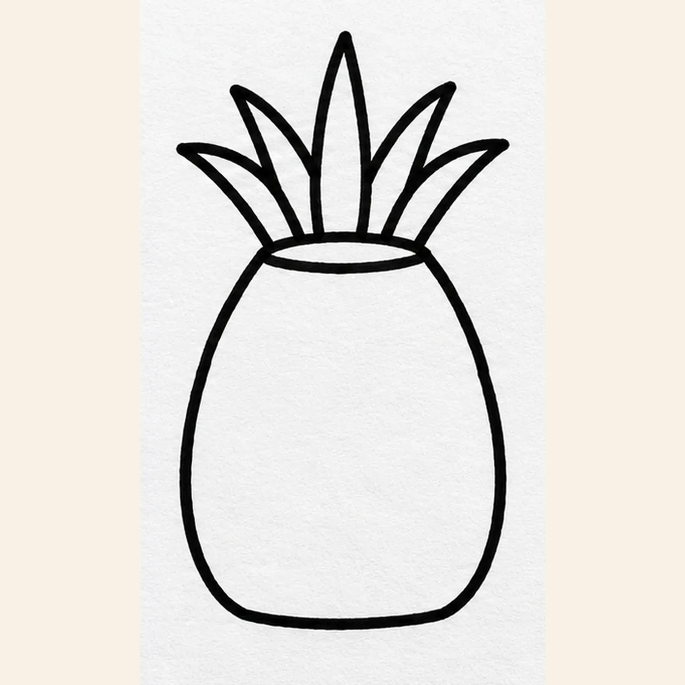
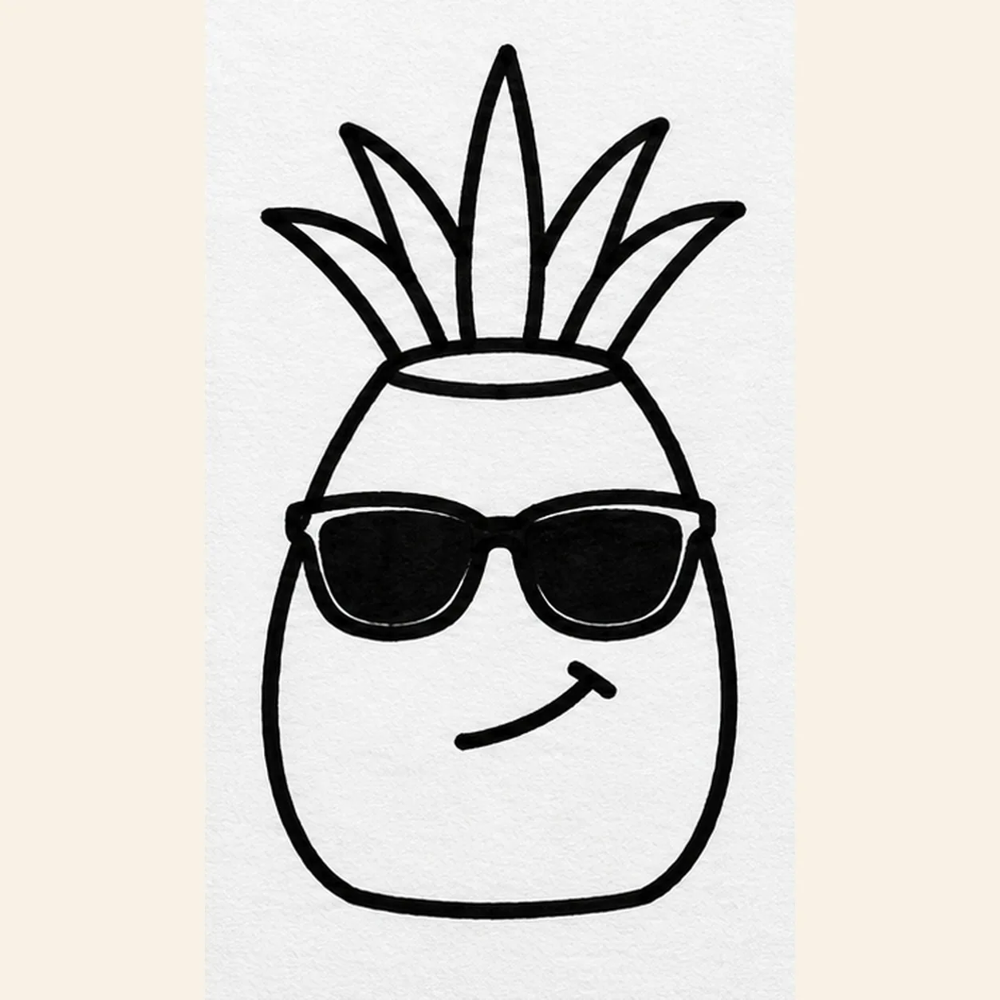
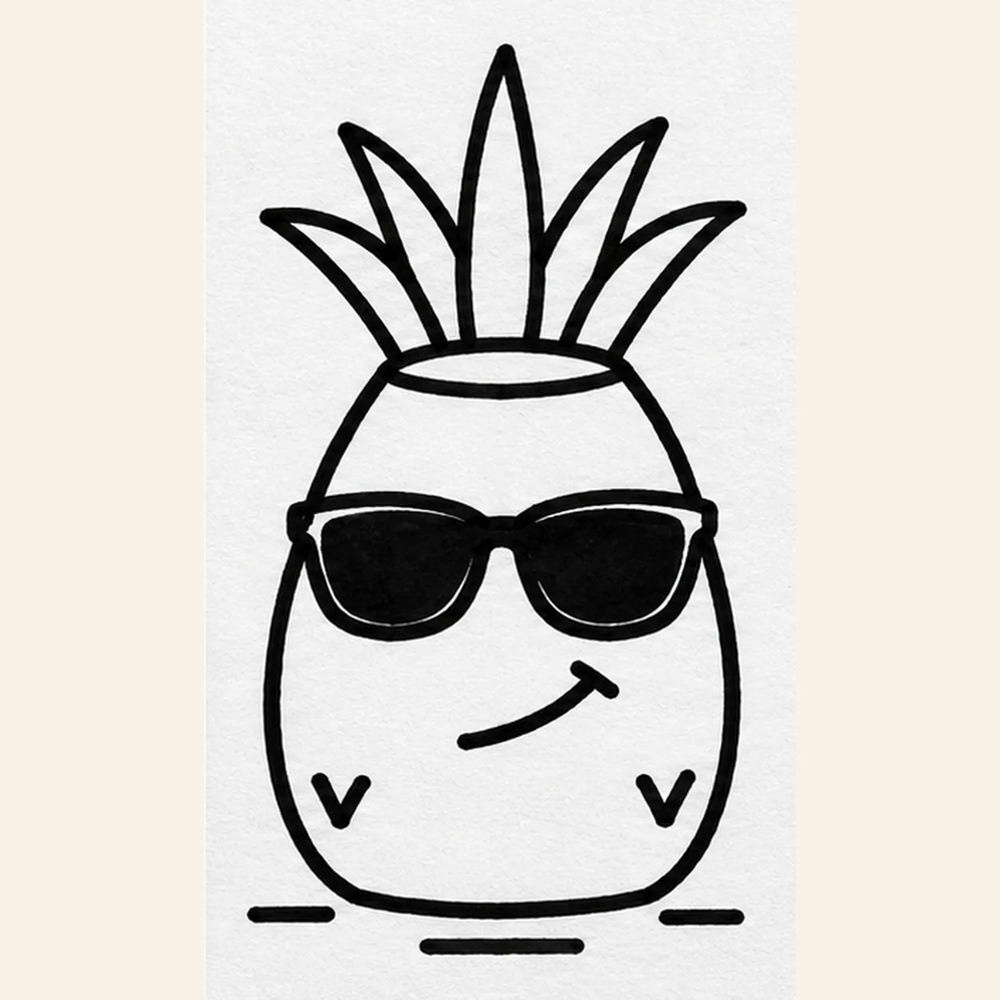

Marker ready?
Let's draw a pineapple
Treat this as one playful practice round: sketch the idea loosely, simplify the shapes, then commit with confident marker outlines and bright fills.
-
01

Shape the pineapple
Draw one upright rounded pineapple body, wider in its lower half, and flatten its base slightly. Close a narrow oval rim across its top where the crown will attach.
Marker tip: The narrow top rim gives all five future crown leaves a firm place to start.
-
02

Grow five crown leaves
Behind the oval top rim, grow five connected pointed leaves; make the middle leaf tallest and fan two shorter leaves to either side. Keep their bases touching the rim.
Marker tip: Count five tips: one tall middle leaf and two on each side.
-
03

Put on the sunglasses
High on the body, draw two broad rounded sunglasses lenses joined by a short bridge. Beneath them, add one off-center crooked smirk instead of dot eyes.
Marker tip: Keep the face playful with a slanted smirk rather than adding dot eyes beneath the shades.
-
04

Mark the rind and ground
Put one small V-shaped rind mark on each lower side of the body, clear of the smile. Add a few broken shadow strokes below the flat base.
Marker tip: Place one V on each side, then count three separated ground strokes.
-
05
Fill the tropical colors
Fill the established fruit golden yellow, its five crown leaves bright green, and the sunglass lenses dark teal-blue. Keep the crooked smirk, two V-shaped rind marks and three ground strokes visible through the marker color.
Marker tip: Color around the black outlines and preserve a few pale streaks in the yellow fill.